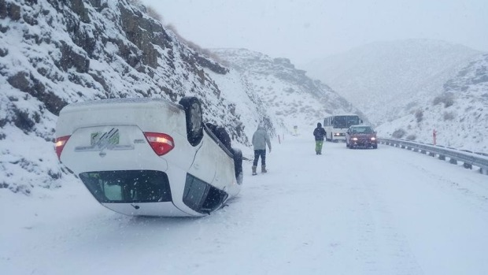

Was a small affair
- Around 17 people registered, but...
- Winter is not the best time for us

- Four people turned up Friday night. One left after two hours
- Three more turned up on Saturday morning
- Mountain road to Wanaka was closed
Our People
- Two devs from the local council - opened up some QT specific datasets
- Swedish Junior PHP Dev
- A French national, here on holiday, who ran a couple of medical AI companies back in Paris
- The son of the organiser
And yet, we made three teams!
Our Projects
- Using map overlay data for local Tracks and Trails - see the status of the tracks and report issues
- Lost and Found Dog app, hooking into Dog Registration database to directly contact an owner
- A tourism app to deliver spoken word accounts of real experiences when in proximity
First two directly influenced by our council attendees, and their knowledge of what the council wanted
Potentially solving real problems
What Really Worked
- Small number, good camaraderie
- Organised well - no food, refreshment or internet issues
- Two of three projects finished with working demo, video and a website
- Layed good groundwork for next year
What Did Not
- Not well advertised locally
- Only 30% attendance from registrations
- This time of year is always going be a challenge
Can fix it next year, with a longer advertising campaign
Links
Track Up
Dog Found
Talk to Me About